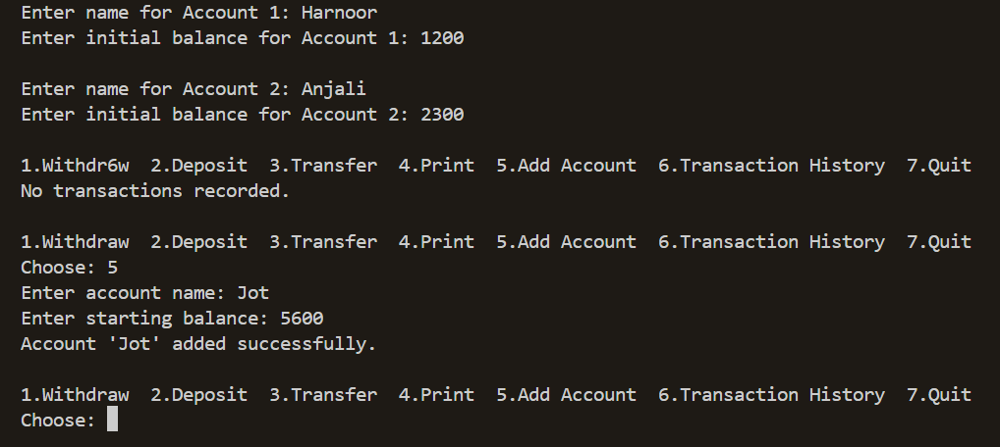
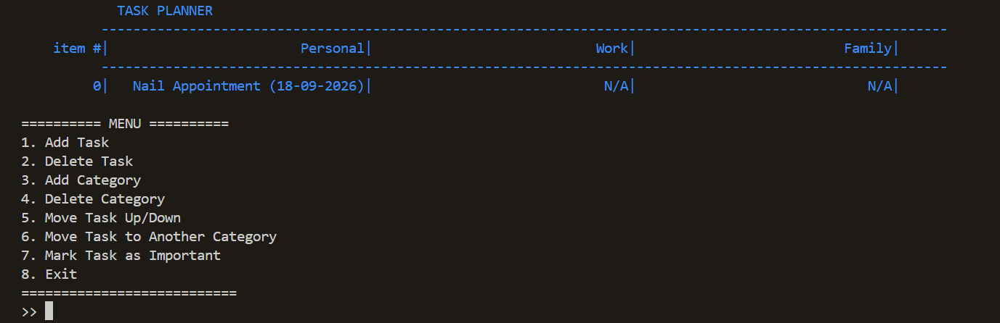
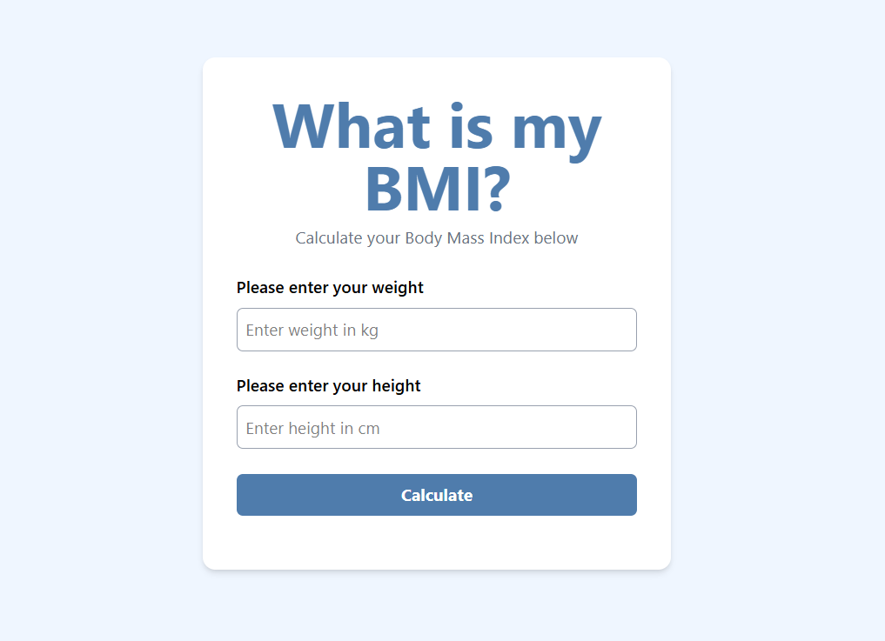
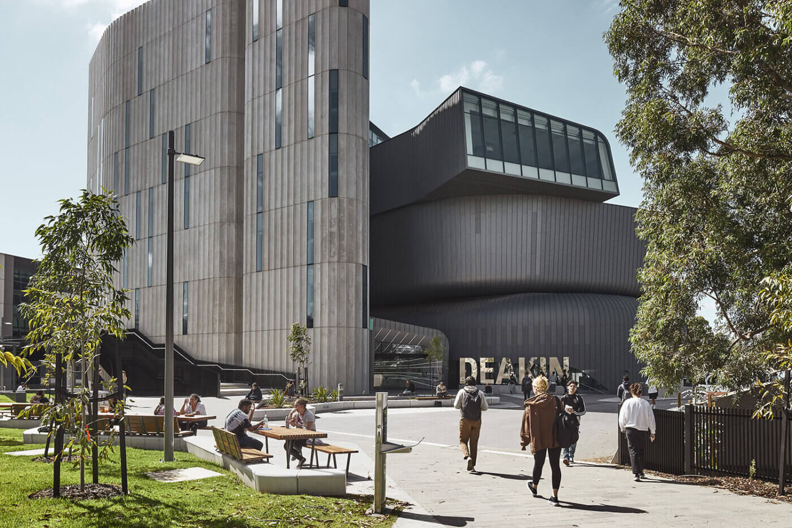
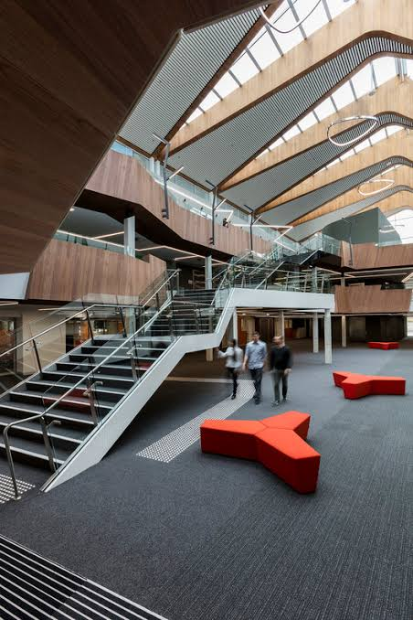
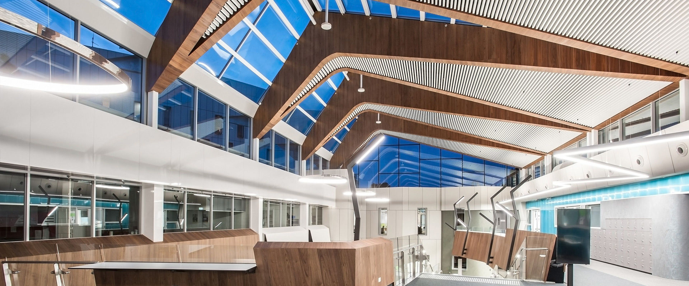
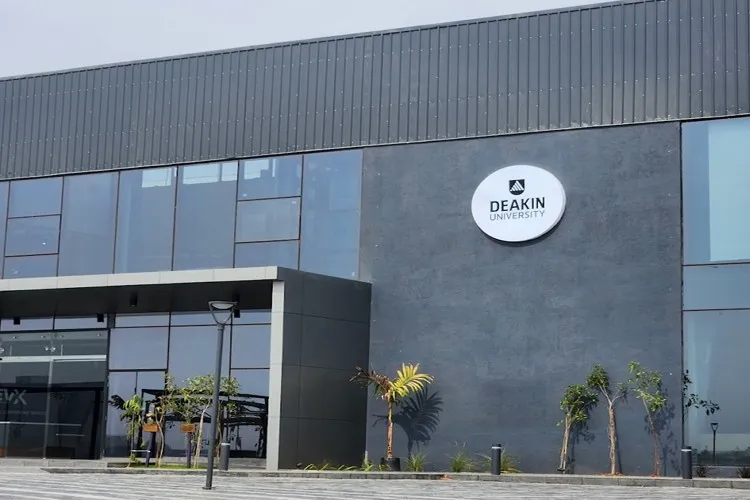

I am a full-stack web developer based in Melbourne, Australia.
Here's what i have done so far

Bank Management System
A C++ console application for managing multiple bank accounts.
Features include account creation, deposits, withdrawals, fund
transfers, and transaction history tracking. Built with
object-oriented design principles and file handling for data
persistence.
View on GitHub

Task Organizer
A C# console application for organizing and managing tasks
efficiently. Features include adding, editing, deleting, and viewing
tasks with priority levels and category management. Built using
object-oriented programming principles with persistent file storage
for task data.
View on GitHub

BMI Calculator
A responsive web application that calculates Body Mass Index (BMI)
based on user input for weight and height. Built with HTML, CSS, and
JavaScript with a clean, intuitive user interface and instant
calculation results.
View on GitHub
My photos



